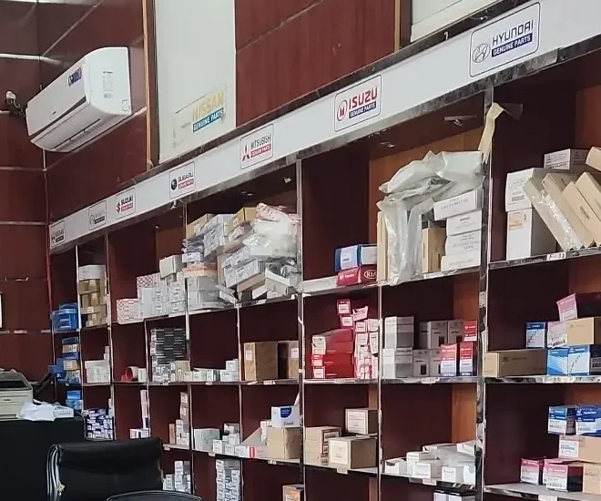

01
قطع أصلية حسب الماركة
نتعامل بقطع الوكالة الأصلية، لا بالمقلّد. هذا عمل سميرة منذ 1980. أعطِ الكاونتر الماركة ورقم الشاصي والقطعة التي تحتاجها، لتركب القطعة الصحيحة في سيارتك.
- تويوتا ولكزساطلب قطعة →
- نيسان وإنفينيتياطلب قطعة →
- لاند روفر وبنتلياطلب قطعة →
- هيونداي وكيااطلب قطعة →
- مازدا وسوزوكياطلب قطعة →
